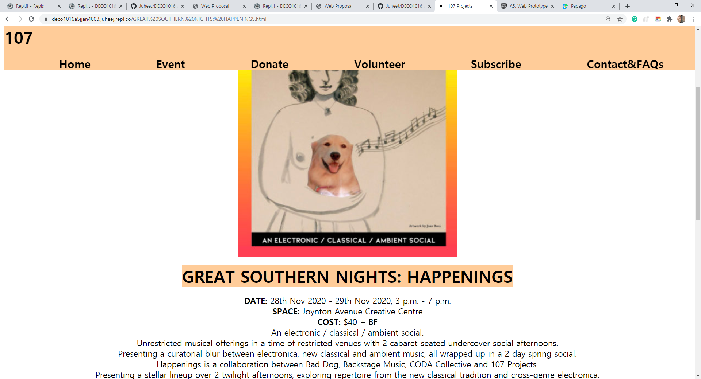

Reflection on Proposal
As I mentioned in proposal,the designs, it was pretty hard to make what I want and what I think.
Plans:
- Automatic swipe of photo on homepage.
- 1/3 of hompage is filled with orange color.
- Navigation bars on the top of the page.
- Navigation bars are staying on the top eventhough the scroll is down.
- Events images and its categories are in hompage, and scrolled horizontally in each categories.
These two was main points that I looking for but I couldn't make it.
Problems:
- Automatic swipe of photo on homepage
- 1/3 of hompage needs filled with orange color
- Scale of images
Automatic swipe needs java script, so it wasn't able to express.
And fill with orange color of 1/3 of homepage was weird to see through wide screen.
Also, the scale of images were hard to manage when consider mobile phone size and computer size.
What is working, and what is showing now:
- The events part in homepage are scrolled vertically
- Donation page, with space that can fill details that they donate
- Event pages, with details (where, when, how, what)
- Hover, when mouse cursor is on the nav, the black changes into white
- Footer with detail of the organisation, sns and way to the 107 organisation.
- Favicon


Designs
- Orange color symbolises creativity. Therefore, the main color will be Orange:
color codes: #FFCC99 #FF9966 #FF6600 #FFFFFF
- Used Orange striped to emphasises different sections
- As put images of events horizontally, to make easy to understand that they are in same categories
The parts that needs development
- Automatic swipe of photo on homepage (need to learn more deep with java scripts)
- scaling the page in mobile and computer more reasonable and clean.
- Scale of images that shows correctly and with no streched out either mobile and computer.
- When I tested it with my friends and family, they said it is easy to navigate to other pages but need more contents.